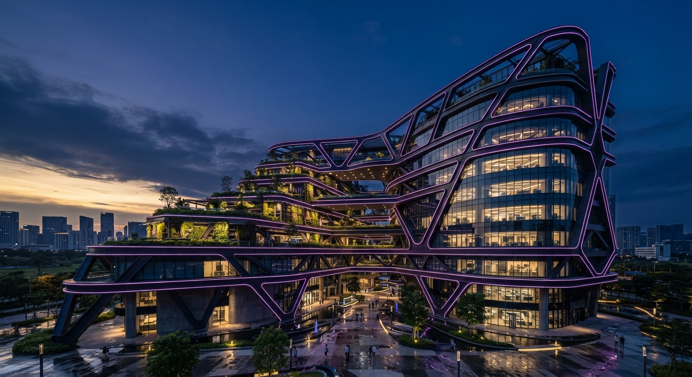

Архітектурна екосистема майбутнього |
Біофільна розкіш |
Еко-урбанізм |
Архітектура майбутнього |
Технологічний зв'язок із природою |
Інженерна досконалість |
Інженерна досконалість |
|
Це основа нашої філософії, де невидима для очей інженерна міць гарантує абсолютну безпеку, автономність та довговічність житла. Концепція об'єднує інноваційні системи «розумний дім», енергоефективні технології нульового викиду, сейсмостійкі конструкції та передові інженерні рішення повного циклу. Це ідеальний баланс між монументальною надійністю та непомітним, бездоганним комфортом нового покоління у вечірніх променях сонця. |
Архітектурний, футуристично - високотехнологічний, інженерний комплекс екологічної будівлі в сутінках, виконаний у надвисокій роздільній здатності. Елегантна мінімалістична архітектура з відкритими панелями з «розумного» скла, тонкими лініями, що світяться, неоново-фіолетового і глибокого сливового відтінків, а також складними конструктивними елементами з темної сталі та бетону. Глибоке індиго сутінкового неба, в якому згасають останні промені «золотої години». |
 |
Позитивні сторони |
Негативні сторони |
Зняття головних заперечень:у той час як попередні блоки продають красу та емоції, цей блок переконує раціонально — він доводить, що за гарною картинкою стоїть бездоганна надійність. Підкреслення інноваційності:демонстрація складних інженерних рішень виділяє компанію на тлі звичайних забудовників і підтверджує статус лідера ринку. Стильний футуристичний візуал:поєднання темного металу, розумного скла та глибоких фіолетових сутінків виглядає вкрай технологічно й дорого. |
Ризик перевантаження термінами:технічні деталі (енергоефективність, комунікації) за своєю природою менш емоційні, ніж природа чи розкіш, тому вимагають дуже точної і лаконічної подачі, щоб не «сушити» загальний стиль. Складність сприйняття:складні інженерні системи важко візуалізувати так, щоб вони виглядали настільки ж захопливо, як панорамні краєвиди чи жива зелень. |
Яку емоцію дає цей простір |
| Відчуття непохитної впевненості, захищеності та повного контролю. Це емоція спокійної впевненості в завтрашньому дні, коли за вашим комфортом стоять передові технології інженерії найвищого рівня. |